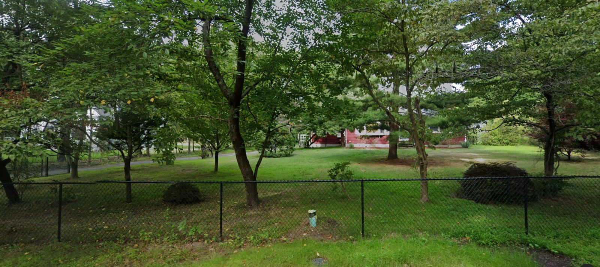

Lot
2.48 ac
108,075 sq ft
A 2.48-acre lot with a 2005 house in Coram, zoned A1 (40,000 sq ft minimum). Last listed at $1,299,999; expired without a sale or relist. Supports 2 lots under town zoning and the county septic rule. Last deed recorded 2025.

| Step | Figure | Basis |
|---|---|---|
| Lot area | 108,075 sq ft · 2.48 ac | County tax map parcel outline |
| Wetlands on the lot | None mapped | County freshwater + tidal wetland maps |
| Net buildable area | 108,075 sq ft | |
| Zoning minimum per house | 40,000 sq ft | A1 · Brookhaven zoning sheet 04-20-26 · §85-177 |
| Septic minimum per house | No cap | In Selden Sewer District |
| Binding rule | Town zoning | 40,000 sq ft per house |
| Lots by right | 2 | 2–3 lots typically work with a flag lot or shared driveway |
Yield: 2 conforming lots before roads, frontage and flag-lot requirements. Confirm with a surveyor's yield map.
Timing: the owner listed at $1.3M and did not sell. The listing agreement has ended.
| Result |
|---|
| No other Suffolk parcel under this owner's name and mailing address. |
| Address | Lot | Use | Owner |
|---|---|---|---|
| 226 Pine Road | 2.12 ac | One-family + apartment | Individual · lives there |
| 230 Pine Road | 0.97 ac | One-family home | Individual · lives there |
| No street address | 0.93 ac | Vacant residential land | Individual |
| No street address | 0.92 ac | Vacant residential land | Individual |
| Address | Lot | 2025 market value | Distance |
|---|---|---|---|
| 0.92 ac | $729,167 | 0.05 mi | |
| 0.31 ac | $552,084 | 0.48 mi | |
| 0.75 ac | $604,166 | 0.58 mi | |
| 66 Thomas Street | 0.34 ac | $729,167 | 0.59 mi |
| 15 West Denis Lane | 0.34 ac | $562,500 | 0.71 mi |
| 49 Walnut Street | 0.32 ac | $583,333 | 0.9 mi |
10 new houses built on vacant lots within 1.5 miles since 2021; median 2025 assessed market value $593,750. Assessed values trail sale prices.
| Result |
|---|
| No residential splits within 3 miles on the 2021 → 2025 rolls. |
Deal structure: acquire at subdivision value from an owner who has already tried to sell, subdivide into 2 conforming lots, and build to the local new-construction market (median new house nearby: $593,750 assessed).
Estimates Lot counts assume the full parcel minus mapped wetlands, before roads and frontage, and need a surveyor's yield map. Owner names are masked; the full record, the phone and the trace are walked through on a call. Pulled Oct 15, 2026 from Suffolk County and New York State public records, town zoning maps and an Oct 4 MLS snapshot.